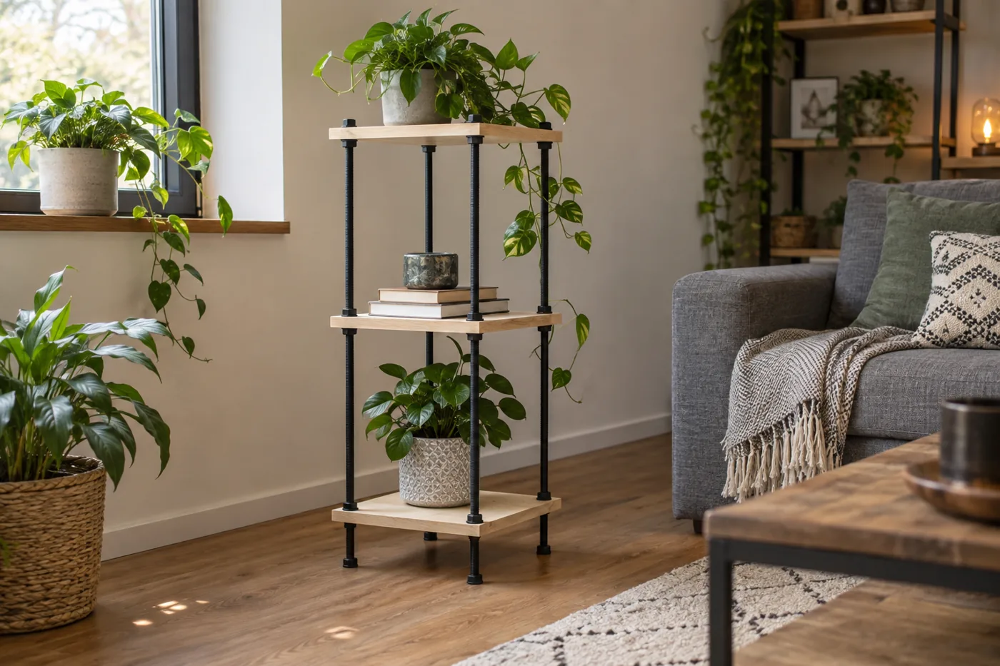
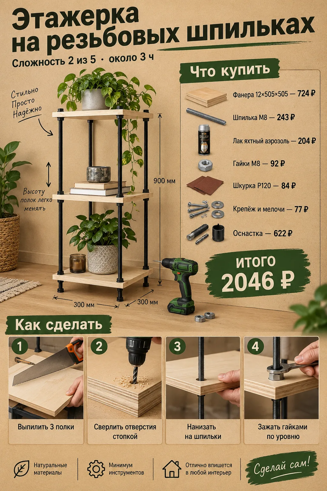
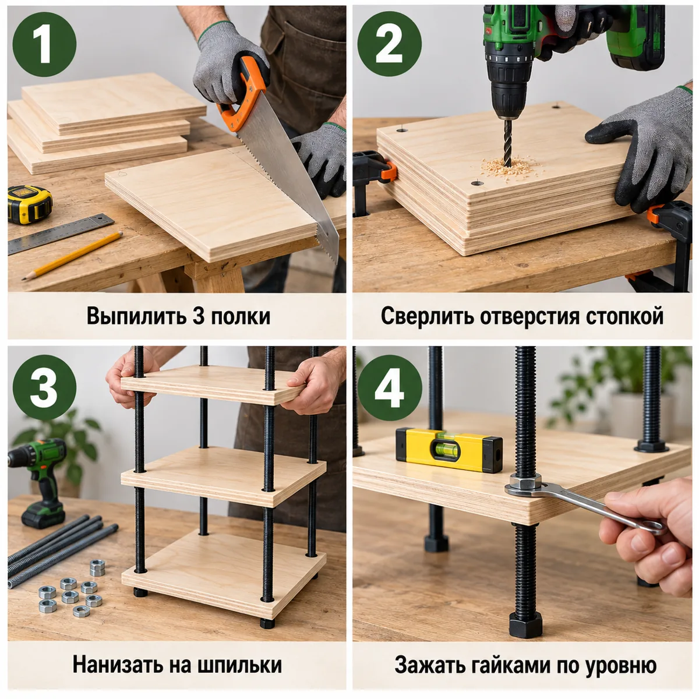

Индустриальная этажерка: квадратные полки из фанеры нанизаны на 3 шпильки М8 и зажаты гайками — высоту полок легко менять.


| Позиция | Зачем | Кол-во | Цена | Сумма |
|---|---|---|---|---|
| материал | ||||
| Фанера 12×505×505 Фанера ФК 12х505х505 мм сорт 3/4 шлифованная · арт. 634466 |
фанера 12×505×505 | 2 л. | 362 ₽ | 724 ₽ |
| Шпилька М8 Шпилька резьбовая оцинкованная d8x1000 мм · арт. 665878 |
шпилька М8×1000 | 3 шт | 81 ₽ | 243 ₽ |
| крепёж | ||||
| Гайки М8 Гайка шестигранная оцинкованная М8 DIN 934 (10 шт.) · арт. 101746 |
гайки М8 (20 шт.) | 2 упак | 46 ₽ | 92 ₽ |
| Шайбы М8 Шайба оцинкованная 8х16 мм DIN 125А (20 шт.) · арт. 109300 |
шайбы М8 | 1 упак | 47 ₽ | 47 ₽ |
| отделка | ||||
| Лак яхтный аэрозоль Лак алкидный яхтный аэрозольный Престиж бесцветный 425 мл глянцевый · арт. 1098186 |
лак | 1 шт | 204 ₽ | 204 ₽ |
| расходник | ||||
| Карандаш Карандаш строительный малярный Hesler (2 шт.) · арт. 125418 |
карандаш | 1 упак | 30 ₽ | 30 ₽ |
| Шкурка P120 Наждачная бумага Flexione 230х280 мм Р120 влагостойкая · арт. 691898 |
шкурка P120 | 2 шт | 42 ₽ | 84 ₽ |
| оснастка | ||||
| Бита PH2 Бита Hesler PH2 магнитная 25 мм (882083) · арт. 882083 |
бита PH2 под саморезы | 1 шт | 33 ₽ | 33 ₽ |
| Сверло 3 мм Сверло по дереву спиральное КМ 3х60 мм (966064) · арт. 966064 |
сверло 3 мм: засверловка, чтобы доска не треснула | 1 шт | 42 ₽ | 42 ₽ |
| Ножовка по дереву Ножовка по дереву 400 мм 9 зуб/дюйм средний зуб · арт. 681543 |
ножовка по дереву | 1 шт | 226 ₽ | 226 ₽ |
| Стусло Стусло Сибртех пластиковое 300х65 мм (22571) · арт. 968520 |
стусло: ровный рез 90° и 45° | 1 шт | 143 ₽ | 143 ₽ |
| Рулетка Рулетка с фиксатором 3 м x 16 мм · арт. 159373 |
рулетка | 1 шт | 99 ₽ | 99 ₽ |
| Сверло 8 мм Сверло по дереву спиральное Vira 8х110 мм (552008) · арт. 669515 |
сверло 8 мм | 1 шт | 79 ₽ | 79 ₽ |
| Итого, включая оснастку 622 ₽ | 2046 ₽ | |||
Источник идеи: https://www.houseofhawthornes.com/diy-industrial-pipe-shelves/. Проект переработан под шуруповёрт 12 В и ручной инструмент.